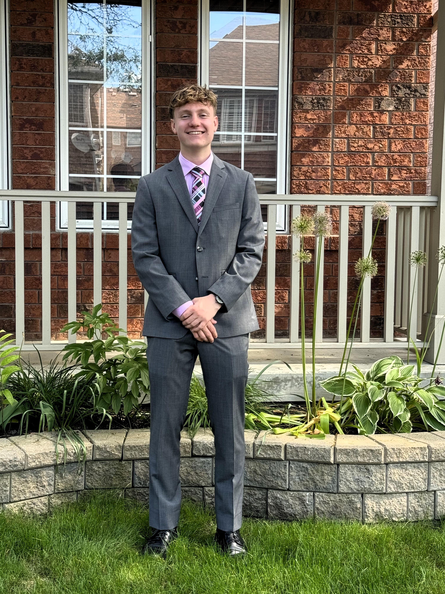
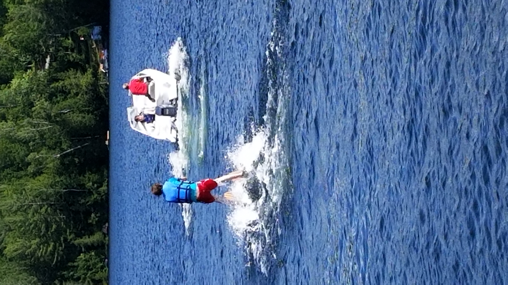
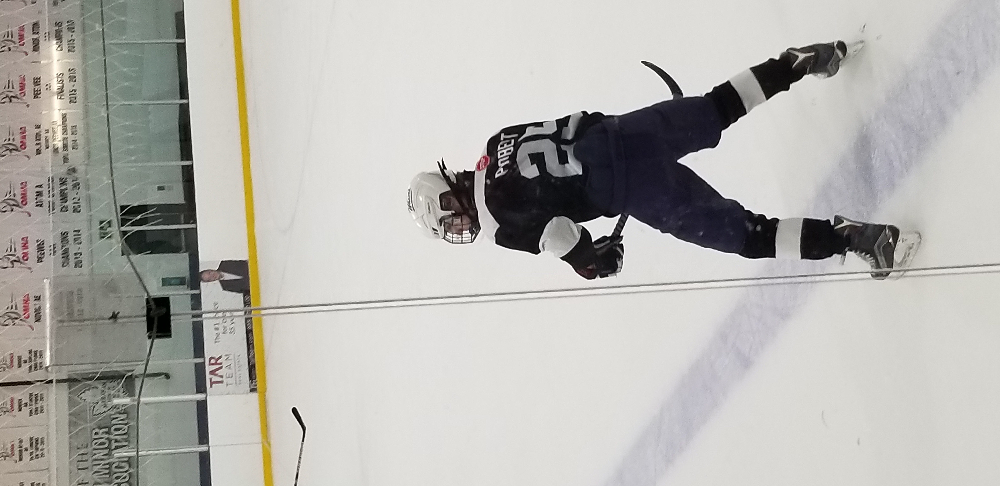
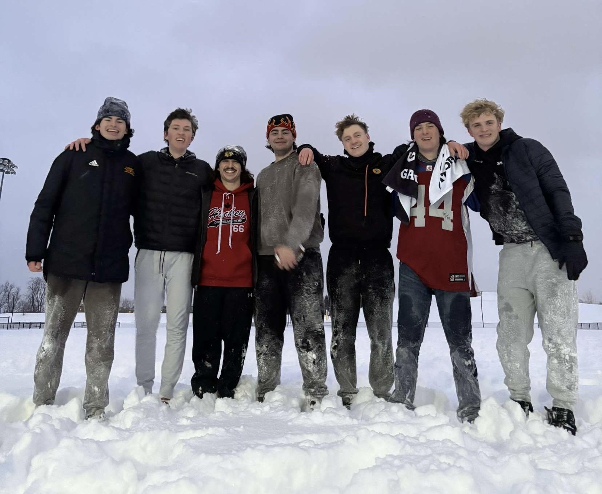

<!DOCTYPE html>
<html lang="en"></html>
    <head>
        <meta charset="UTF-8">
        <meta name="viewport" content="width=device-width, initial-scale=1.0">
        <title>About Me</title>
        <link rel="stylesheet" href="webstyle.css" />
    </head>
    <body>
        <nav>
            <a href="home.html">Home</a>
            <a href="one.html">About</a>
            <a href="two.html">Projects</a>
            <a href="three.html">Experience</a>
            <a href="four.html">Hobbies</a>
        </nav>

        <figure style="margin: 0 auto; margin-top: 30px; margin-left: 75px;">
            
            <figcaption style="color: white; font-size: 18px; margin-top: 5px;">
                <!-- caption here -->
            </figcaption>
        </figure> 

        <h1 style = "text-align: center">Introduction</h1>
        <h2><p style = "text-align: center;">Hi, I’m Benjamin Probert, a first year student from Markham, Ontario. 
            I am currently studying for my Bachelor of Computing degree, majoring in Computer Science Honours, with a minor in Statistics at the University of Guelph. 
            I have a strong passion in Artificial Intelligence, Game Development, Embedded Systems (IoT), and Computer Vision.
        </p></h2>

        <div class="gallery">
          
          
          
          
          
        </div>  

        <div class="two-column-container">
            <div class="column">
              <h1>Why Computer Science?</h1>
              <h2>
                I have always been interested in Computer Science. Growing up with computers, I have always been fascinated to learn about new technologies
                and innovations, or specifically, coding. Ever since I began coding on Scratch in elementary school, I have always had a passion
                for it, and knew that I would end up in this field. Its blend of logical reasoning, creativity, and practical application makes it 
                an exciting choice for me.
              </h2>
            </div>
            <div class="column">
              <h1>Why University of Guelph?</h1>
              <h2>
                The day that I took a tour to the University of Guelph was the day I fell in love with the campus.
                Additionally, my brother, who is two years older than me, also attends the University of Guelph for Computer Science. Maybe it runs in the family!
                Finally, the opportunity to work alongside inspiring professors and peers in a supportive environment will help me grow 
                both academically and personally as I pursue my goals in Computer Science at UOFG.
              </h2>
            </div>
          </div>

          <!--column-->
          <figure style="display: flex; align-items: center; margin-top: 30px;">
            <figcaption style="margin-right: 20px; flex: 1;">
              <!-- text on the left here -->
              <h1>Academic Goals</h1>
              <h2>
                <p>
                  I am driven by a passion for academic excellence and personal growth. Academically, I prioritize my grades over
                  anything else. I am on the Dean's Honour's List for my first semester at UOFG. I have been honour roll at my high school
                  all four years that I attended. My GPA for my first semester was a 93.4%, and I plan to keep it similar for my following semesters.
                  As for clubs, I am hoping to join the executive team as SOCIS's VP of Internal Affairs!
                </p>
              </h2>
            </figcaption>
            
          </figure>
          
          <figure style="display: flex; align-items: center; margin-top: 30px;">
            
            <figcaption style="margin-left: 20px; flex: 1;">
              <!-- text on the right here -->
              <h1>Personal Goals</h1>
              <h2>
                <p>
                  As for personal goals, there are many things I strive to accomplish in my life. A major goal of mine is to travel the world, 
                  immersing myself in different cultures, admiring the beauty of our planet, and broadening my perspective on the world.
                  An equally important goal is my desire to build a loving, close-knit family. Finally, on a more physical note, I have the drive
                  to stay active in sports and to keep up with my overall health as I age.
                </p>
              </h2>
            </figcaption>
          </figure>
          
          
          
      </figure> 
        
        <footer>
            <p>&copy; 2025 Benjamin Probert. All Rights Reserved.</p>
            <nav>
                <a href="one.html">About</a> |
                <a href="https://www.linkedin.com/in/benjamin-probert/" target="_blank">LinkedIn</a> |
                <a href="https://github.com/Benguin25" target="_blank">GitHub</a> |
                <a href="404.html">Error 404 Page - just for fun :)</a>
            </nav>
        </footer>
    </body>
</html>